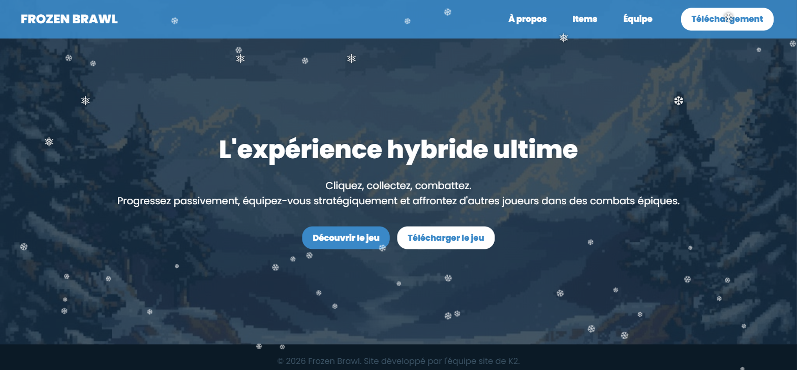
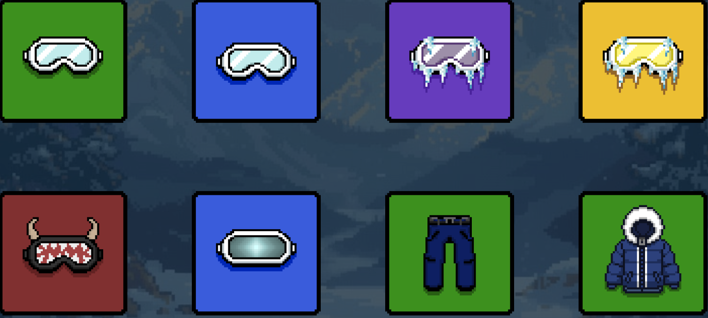
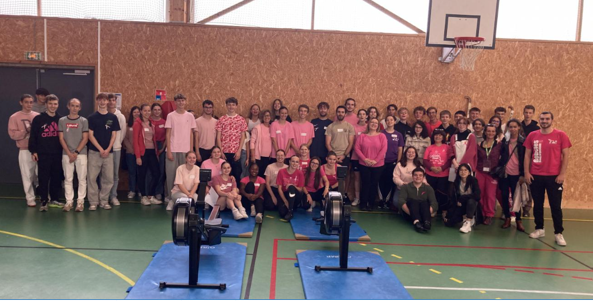
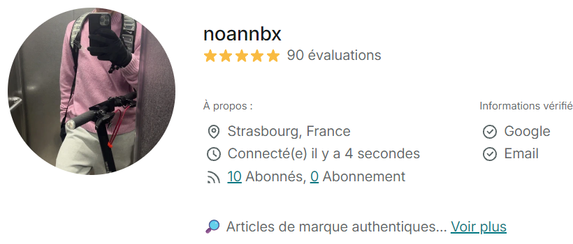
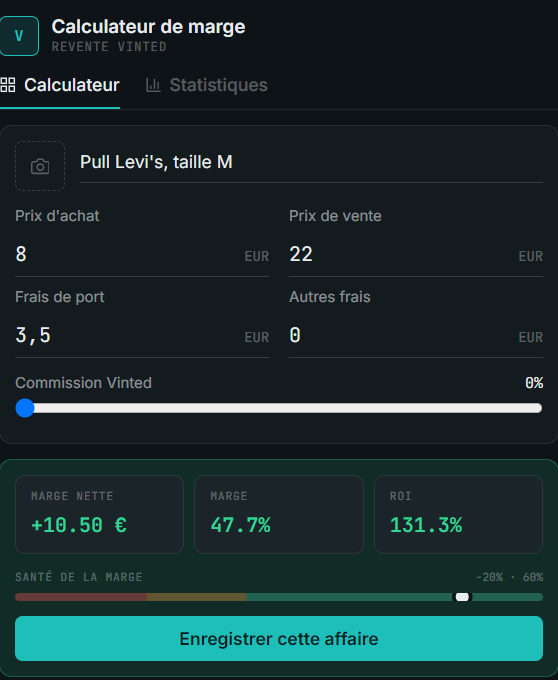

<title>Noann Beaux Portfolio</title>
<link rel="preconnect" href="https://fonts.googleapis.com">
<link rel="stylesheet" href="https://fonts.googleapis.com/css2?family=Space+Grotesk:wght@500;600;700&family=Inter:wght@400;500;600;700&display=swap">
<style>
  /* Layout concept: classic nav-driven personal site — sticky header with
     initials mark, stacked sections, skill bars, education timeline, project
     cards, contact form. Calm and professional. */
  :root{
    --bg:#ffffff;
    --bg-alt:#f4f5f7;
    --ink:#161a20;
    --ink-muted:#5c6470;
    --line:#e4e6eb;
    --accent:#3d5afe;
    --accent-soft:#e8ebff;
    --font-display:'Space Grotesk', ui-sans-serif, sans-serif;
    --font-body:'Inter', -apple-system, BlinkMacSystemFont, sans-serif;
    color-scheme: light;
  }
  @media (prefers-color-scheme: dark){
    :root:not([data-theme="light"]){
      --bg:#14161b;
      --bg-alt:#1b1e25;
      --ink:#eef0f4;
      --ink-muted:#9aa1ad;
      --line:#2b2f38;
      --accent:#7c93ff;
      --accent-soft:#232a4a;
      color-scheme: dark;
    }
  }
  :root[data-theme="dark"]{
    --bg:#14161b;
    --bg-alt:#1b1e25;
    --ink:#eef0f4;
    --ink-muted:#9aa1ad;
    --line:#2b2f38;
    --accent:#7c93ff;
    --accent-soft:#232a4a;
    color-scheme: dark;
  }

  *{ box-sizing:border-box; }
  html{ scroll-behavior:smooth; }
  @media (prefers-reduced-motion: reduce){ html{ scroll-behavior:auto; } *{ animation-duration:0.001ms !important; transition-duration:0.001ms !important; } }

  body{ background:var(--bg); color:var(--ink); font-family:var(--font-body); padding-inline:0; line-height:1.5; }

  .wrap{ max-width:880px; margin:0 auto; padding-inline:24px; }

  header.top{
    position:sticky; top:env(safe-area-inset-top, 0px); z-index:30;
    background:color-mix(in srgb, var(--bg) 88%, transparent);
    backdrop-filter:blur(8px); border-bottom:1px solid var(--line);
  }
  header.top .wrap{ display:flex; align-items:center; justify-content:space-between; padding-block:14px; gap:16px; }
  .mark{
    width:38px; height:38px; border-radius:50%; background:var(--ink); color:var(--bg);
    display:flex; align-items:center; justify-content:center; font-family:var(--font-display);
    font-weight:700; font-size:0.95rem; flex-shrink:0;
  }
  nav.tabs{ display:flex; gap:4px; overflow-x:auto; scrollbar-width:none; min-width:0; }
  nav.tabs::-webkit-scrollbar{ display:none; }
  nav.tabs a{
    font-size:0.85rem; font-weight:500; color:var(--ink-muted); text-decoration:none;
    white-space:nowrap; padding:8px 12px; border-radius:6px;
  }
  nav.tabs a:hover{ color:var(--ink); background:var(--bg-alt); }
  nav.tabs a:focus-visible{ outline:2px solid var(--accent); outline-offset:1px; border-radius:6px; }

  main{ padding-block: 8px 48px; }
  section{ padding-block:56px; border-bottom:1px solid var(--line); }
  section:last-of-type{ border-bottom:none; }

  .kicker{
    font-size:0.78rem; font-weight:600; letter-spacing:0.08em; text-transform:uppercase;
    color:var(--accent); margin-block-end:8px;
  }
  h1,h2,h3{ font-family:var(--font-display); text-wrap:balance; margin:0; }
  h2{ font-size:clamp(1.5rem, 4vw, 1.9rem); margin-block-end:28px; }

  /* Hero */
  #hero{ padding-block:52px 44px; }
  .hero-row{ display:flex; align-items:center; gap:28px; flex-wrap:wrap; }
  .avatar{
    width:96px; height:96px; border-radius:50%; flex-shrink:0;
    background:linear-gradient(145deg, var(--accent), var(--accent-soft));
    display:flex; align-items:center; justify-content:center;
    font-family:var(--font-display); font-weight:700; font-size:1.8rem; color:#fff;
  }
  .hero-text{ min-width:0; flex:1; }
  h1.name{ font-size:clamp(2rem, 6vw, 2.7rem); font-weight:700; letter-spacing:-0.01em; }
  .role{ color:var(--ink-muted); font-size:1.05rem; margin-block-start:6px; }
  .bio{ max-width:64ch; margin-block-start:22px; font-size:1rem; color:var(--ink); }
  .cta-row{ display:flex; gap:12px; flex-wrap:wrap; margin-block-start:26px; }
  .btn{
    font-family:var(--font-body); font-weight:600; font-size:0.9rem; text-decoration:none;
    padding:11px 20px; border-radius:8px; display:inline-flex; align-items:center; gap:8px;
    border:1px solid transparent;
  }
  .btn.primary{ background:var(--ink); color:var(--bg); }
  .btn.primary:hover{ opacity:0.88; }
  .btn.ghost{ border-color:var(--line); color:var(--ink); }
  .btn.ghost:hover{ border-color:var(--ink); }
  .btn:focus-visible{ outline:2px solid var(--accent); outline-offset:2px; }

  /* Skills */
  .skill-groups{ display:grid; grid-template-columns:repeat(2, 1fr); gap:32px 40px; }
  @media (max-width:600px){ .skill-groups{ grid-template-columns:1fr; } }
  .skill-group h3{ font-size:0.78rem; font-weight:600; letter-spacing:0.06em; text-transform:uppercase; color:var(--ink-muted); margin-block-end:16px; }
  .skill{ margin-block-end:16px; }
  .skill:last-child{ margin-block-end:0; }
  .skill-label{ display:flex; justify-content:space-between; font-size:0.9rem; margin-block-end:6px; }
  .skill-label .lvl{ color:var(--ink-muted); font-size:0.82rem; }
  .bar{ height:6px; border-radius:99px; background:var(--bg-alt); overflow:hidden; }
  .bar span{ display:block; height:100%; border-radius:99px; background:var(--accent); }

  .soft-skills{ display:flex; flex-wrap:wrap; gap:10px; }
  .soft-tag{
    font-size:0.88rem; font-weight:500; color:var(--ink);
    background:var(--bg-alt); border:1px solid var(--line);
    padding:8px 14px; border-radius:8px;
  }
  .soft-list{ display:flex; flex-direction:column; gap:14px; }
  .soft-item h4{ margin:0; font-size:0.92rem; font-weight:600; }
  .soft-item p{ margin:4px 0 0; font-size:0.86rem; color:var(--ink-muted); line-height:1.5; }

  /* Diplomas / timeline */
  .timeline{ position:relative; padding-inline-start:26px; }
  .timeline::before{ content:""; position:absolute; left:5px; top:6px; bottom:6px; width:2px; background:var(--line); }
  .tl-item{ position:relative; padding-block-end:26px; }
  .tl-item:last-child{ padding-block-end:0; }
  .tl-item::before{
    content:""; position:absolute; left:-26px; top:4px; width:12px; height:12px;
    border-radius:50%; background:var(--bg); border:2px solid var(--accent);
  }
  .tl-year{ font-family:var(--font-display); font-weight:600; font-size:0.82rem; color:var(--accent); }
  .tl-title{ font-weight:600; margin-block-start:2px; }
  .tl-desc{ color:var(--ink-muted); font-size:0.9rem; margin-block-start:3px; max-width:56ch; }

  /* Portfolio */
  .proj-grid{ display:grid; grid-template-columns:repeat(3, 1fr); gap:18px; }
  @media (max-width:760px){ .proj-grid{ grid-template-columns:1fr; } }
  .proj-card{
    background:var(--bg-alt); border:1px solid var(--line); border-radius:12px;
    overflow:hidden; display:flex; flex-direction:column; min-width:0;
  }
  .proj-thumb{
    height:96px; display:flex; align-items:center; justify-content:center;
    background:linear-gradient(135deg, var(--accent-soft), var(--bg-alt));
  }
  .proj-thumb svg{ width:34px; height:34px; stroke:var(--accent); }
  .proj-body{ padding:18px; display:flex; flex-direction:column; gap:8px; flex:1; }
  .proj-body h3{ font-size:1.02rem; font-weight:600; }
  .proj-body p{ margin:0; font-size:0.88rem; color:var(--ink-muted); line-height:1.5; }
  .proj-stack{ display:flex; flex-wrap:wrap; gap:6px; margin-block-start:auto; padding-block-start:4px; }
  .stack-tag{
    font-size:0.72rem; font-weight:500; color:var(--accent); background:var(--accent-soft);
    padding:3px 9px; border-radius:99px;
  }
  .proj-card--featured{ grid-column: span 3; }
  @media (max-width:760px){ .proj-card--featured{ grid-column: span 1; } }
  .proj-thumb--image{ height:auto; padding:0; }
  .proj-thumb--image img{ width:100%; display:block; }
  .proj-thumb--calc{ background:#0D1316; display:flex; justify-content:center; }
  .proj-thumb--calc img{ width:auto; max-width:280px; max-height:340px; }
  .proj-shots{
    display:flex; border:1px solid var(--line); border-radius:8px; overflow:hidden; margin-block-start:2px;
  }
  .proj-shots img{ width:100%; display:block; }
  .proj-link{
    font-size:0.85rem; font-weight:600; color:var(--accent); text-decoration:none;
    margin-block-start:auto; padding-block-start:4px;
  }
  .proj-link:hover{ text-decoration:underline; }

  /* References */
  .ref-list{ display:flex; flex-direction:column; gap:16px; }
  .ref-item{ display:flex; gap:14px; align-items:flex-start; }
  .ref-dot{ width:8px; height:8px; border-radius:50%; background:var(--accent); margin-block-start:7px; flex-shrink:0; }
  .ref-item p{ margin:0; font-size:0.94rem; }
  .ref-item .sub{ color:var(--ink-muted); font-size:0.85rem; margin-block-start:2px; }
  .ref-year{ font-size:0.76rem; font-weight:600; color:var(--accent); margin-block-end:2px; display:block; }

  /* Contact */
  .contact-layout{ display:grid; grid-template-columns:1fr 1fr; gap:40px; }
  @media (max-width:680px){ .contact-layout{ grid-template-columns:1fr; } }
  .contact-info{ display:flex; flex-direction:column; gap:16px; }
  .info-row{ display:flex; align-items:center; gap:12px; }
  .info-row svg{ width:18px; height:18px; stroke:var(--accent); flex-shrink:0; }
  .info-row a, .info-row span.val{ color:var(--ink); text-decoration:none; font-size:0.94rem; }
  .info-row a:hover{ color:var(--accent); }
  .copy-btn{
    font-size:0.75rem; font-weight:500; background:none; border:1px solid var(--line);
    border-radius:6px; padding:3px 9px; color:var(--ink-muted); cursor:pointer; margin-inline-start:4px;
  }
  .copy-btn:hover{ border-color:var(--accent); color:var(--accent); }
  .copy-btn:focus-visible{ outline:2px solid var(--accent); outline-offset:1px; }

  form.contact-form{ display:flex; flex-direction:column; gap:14px; }
  .field label{ display:block; font-size:0.82rem; font-weight:500; margin-block-end:6px; }
  .field input, .field textarea{
    width:100%; font-family:var(--font-body); font-size:0.92rem; color:var(--ink);
    background:var(--bg-alt); border:1px solid var(--line); border-radius:8px;
    padding:10px 12px; resize:vertical;
  }
  .field input:focus, .field textarea:focus{ outline:2px solid var(--accent); outline-offset:1px; border-color:transparent; }
  .field textarea{ min-height:96px; }
  .form-note{ font-size:0.78rem; color:var(--ink-muted); }
  .submit-btn{
    align-self:flex-start; font-family:var(--font-body); font-weight:600; font-size:0.9rem;
    background:var(--ink); color:var(--bg); border:none; border-radius:8px; padding:11px 22px; cursor:pointer;
  }
  .submit-btn:hover{ opacity:0.88; }
  .submit-btn:focus-visible{ outline:2px solid var(--accent); outline-offset:2px; }
  .form-status{ font-size:0.85rem; color:var(--accent); min-height:1.2em; }

  /* Stats row (hero) */
  .stats-row{ display:flex; flex-wrap:wrap; gap:28px; margin-block-start:32px; }
  .stat{ min-width:96px; }
  .stat-num{ font-family:var(--font-display); font-weight:700; font-size:1.7rem; color:var(--accent); line-height:1; }
  .stat-label{ font-size:0.78rem; color:var(--ink-muted); margin-block-start:4px; }

  /* Key skills (3 compétences clés) */
  .key-grid{ display:grid; grid-template-columns:repeat(3, 1fr); gap:16px; margin-block-start:32px; }
  @media (max-width:700px){ .key-grid{ grid-template-columns:1fr; } }
  .key-card{
    background:var(--bg-alt); border:1px solid var(--line); border-radius:12px; padding:20px;
    display:flex; flex-direction:column; gap:8px;
  }
  .key-card .key-num{
    width:28px; height:28px; border-radius:50%; background:var(--accent); color:#fff;
    display:flex; align-items:center; justify-content:center; font-family:var(--font-display);
    font-weight:700; font-size:0.82rem; flex-shrink:0;
  }
  .key-card h4{ margin:0; font-size:0.98rem; font-weight:600; }
  .key-card p{ margin:0; font-size:0.85rem; color:var(--ink-muted); line-height:1.5; }

  /* Sub kicker inside a section (for 2.3 inside Compétences) */
  .sub-kicker{ font-size:0.78rem; font-weight:600; letter-spacing:0.06em; text-transform:uppercase; color:var(--ink-muted); margin-block:40px 0; }

  /* Project meta + chips */
  .proj-meta{ font-size:0.76rem; color:var(--ink-muted); font-weight:500; }
  .proj-chips{ display:flex; flex-wrap:wrap; gap:6px; margin-block-start:2px; }
  .chip{
    font-size:0.72rem; font-weight:500; color:var(--accent); background:var(--accent-soft);
    padding:3px 9px; border-radius:99px;
  }

  /* Auto-évaluation (bilan) */
  .eval-grid{ display:grid; grid-template-columns:1fr 1fr; gap:24px; }
  @media (max-width:680px){ .eval-grid{ grid-template-columns:1fr; } }
  .eval-col{ border-radius:14px; padding:24px; }
  .eval-col.strengths{ background:var(--accent-soft); }
  .eval-col.growth{ background:var(--bg-alt); border:1px solid var(--line); }
  .eval-col h3{ font-family:var(--font-display); font-size:1rem; margin-block-end:14px; }
  .eval-col.strengths h3{ color:var(--accent); }
  .eval-list{ display:flex; flex-direction:column; gap:12px; margin:0; padding:0; list-style:none; }
  .eval-list li{ font-size:0.9rem; line-height:1.5; padding-inline-start:20px; position:relative; }
  .eval-list li::before{ content:"→"; position:absolute; left:0; color:var(--accent); font-weight:600; }

  /* Interests */
  .interests-row{ display:flex; flex-wrap:wrap; gap:10px; margin-block-start:14px; }

  footer{
    padding-block:24px; padding-bottom:calc(24px + env(safe-area-inset-bottom, 0px));
    text-align:center; font-size:0.8rem; color:var(--ink-muted);
  }
</style>

<header class="top">
  <div class="wrap">
    <span class="mark">NB</span>
    <nav class="tabs" aria-label="Sections">
      <a href="#hero">À propos</a>
      <a href="#competences">Compétences</a>
      <a href="#diplomes">Diplômes</a>
      <a href="#projets">Portfolio</a>
      <a href="#bilan">Bilan</a>
      <a href="#references">Expériences</a>
      <a href="#contact">Contact</a>
    </nav>
  </div>
</header>

<main class="wrap">

  <section id="hero">
    <div class="hero-row">
      <div class="avatar">NB</div>
      <div class="hero-text">
        <h1 class="name">Noann Beaux</h1>
        <p class="role">Étudiant en informatique, EPITA — Bac général Mathématiques &amp; Physique-Chimie, mention Bien</p>
        <p class="bio">
          Ce portfolio présente mon parcours, mes compétences et mes réalisations, dans le cadre de ma formation à EPITA.
          Curieux de tout ce qui touche à l'informatique, je construis mes propres outils à côté des cours
          et je multiplie les expériences de terrain. Je vise une carrière d'ingénieur, avec un intérêt marqué
          pour la cybersécurité et l'intelligence artificielle.
        </p>
        <div class="cta-row">
          <a class="btn primary" href="#contact">Me contacter</a>
        </div>
      </div>
    </div>
  </section>

  <section id="competences">
    <div class="kicker">Compétences</div>
    <h2>Ce que je sais faire</h2>
    <div class="skill-groups">
      <div class="skill-group">
        <h3>Langages &amp; outils</h3>
        <div class="skill">
          <div class="skill-label"><span>Python</span><span class="lvl">Solide</span></div>
          <div class="bar"><span style="width:70%"></span></div>
        </div>
        <div class="skill">
          <div class="skill-label"><span>C</span><span class="lvl">Intermédiaire</span></div>
          <div class="bar"><span style="width:55%"></span></div>
        </div>
        <div class="skill">
          <div class="skill-label"><span>HTML</span><span class="lvl">Intermédiaire</span></div>
          <div class="bar"><span style="width:55%"></span></div>
        </div>
        <div class="skill">
          <div class="skill-label"><span>Git</span><span class="lvl">Intermédiaire</span></div>
          <div class="bar"><span style="width:50%"></span></div>
        </div>
        <div class="skill">
          <div class="skill-label"><span>Linux</span><span class="lvl">Débutant</span></div>
          <div class="bar"><span style="width:35%"></span></div>
        </div>
        <div class="skill">
          <div class="skill-label"><span>Excel</span><span class="lvl">Intermédiaire</span></div>
          <div class="bar"><span style="width:55%"></span></div>
        </div>
      </div>
      <div class="skill-group">
        <h3>Savoir-être</h3>
        <div class="soft-list">
          <div class="soft-item">
            <h4>Travail d'équipe</h4>
            <p>Développé au sein du projet Frozen Brawl, mené en équipe de 5 étudiants pendant 9 mois.</p>
          </div>
          <div class="soft-item">
            <h4>Organisation</h4>
            <p>Mobilisée pour l'organisation de l'événement Octobre Rose avec ma classe de spécialité sport.</p>
          </div>
          <div class="soft-item">
            <h4>Sens du relationnel et du commerce</h4>
            <p>Développé à travers la négociation avec les acheteurs dans le cadre de mon activité Vinted.</p>
          </div>
          <div class="soft-item">
            <h4>Esprit d'initiative et autonomie</h4>
            <p>Illustré par la conception et le développement en solo du calculateur de marge Vinted, de l'idée à l'outil fonctionnel.</p>
          </div>
        </div>
      </div>
    </div>

    <div class="sub-kicker">Trois compétences clés retenues</div>
    <div class="key-grid">
      <div class="key-card">
        <span class="key-num">1</span>
        <h4>Autonomie technique</h4>
        <p>Capable de prendre en charge seul la conception et la réalisation d'un outil technique, de l'idée jusqu'au produit fonctionnel — comme le calculateur de marge Vinted.</p>
      </div>
      <div class="key-card">
        <span class="key-num">2</span>
        <h4>Adaptabilité en équipe</h4>
        <p>Je sais réorganiser mon travail et celui du groupe face à un imprévu, comme lors de la réorganisation sur Frozen Brawl après le départ de deux coéquipiers.</p>
      </div>
      <div class="key-card">
        <span class="key-num">3</span>
        <h4>Sens de l'organisation événementielle</h4>
        <p>Je sais planifier et coordonner un événement impliquant plusieurs personnes, comme l'organisation du triathlon Octobre Rose.</p>
      </div>
    </div>
  </section>

  <section id="diplomes">
    <div class="kicker">Parcours</div>
    <h2>Diplômes &amp; formation</h2>
    <div class="timeline">
      <div class="tl-item">
        <div class="tl-year">2025 — aujourd'hui</div>
        <div class="tl-title">EPITA — École d'ingénieurs en informatique</div>
        <div class="tl-desc">Domaine d'études : Computer Science. Première année de cycle ingénieur — bases en algorithmique, programmation et culture système, approfondies à travers les projets de l'école.</div>
      </div>
      <div class="tl-item">
        <div class="tl-year">2025</div>
        <div class="tl-title">Baccalauréat général — mention Bien</div>
        <div class="tl-desc">Spécialités Mathématiques &amp; Physique-Chimie — m'ont donné le goût du raisonnement analytique et de la résolution de problèmes.</div>
      </div>
    </div>
  </section>

  <section id="projets">
    <div class="kicker">Réalisations</div>
    <h2>Portfolio</h2>
    <div class="proj-grid">
      <div class="proj-card proj-card--featured">
        <div class="proj-thumb proj-thumb--image">
          
        </div>
        <div class="proj-body">
          <div class="proj-meta">Septembre 2025 – Juin 2026 · 9 mois</div>
          <h3>Frozen Brawl</h3>
          <p>Frozen Brawl est un projet de jeu vidéo noté, réalisé en équipe de 5 étudiants dans le cadre de la scolarité à EPITA, avec pour objectif de concevoir et livrer un jeu complet et jouable, doté d'une identité visuelle et sonore cohérente. Je me suis occupé des designs visuels, du game design et de la création des musiques et effets sonores du jeu : conception de l'identité visuelle et sonore en pixel art, participation à l'équilibrage du gameplay, coordination avec le reste de l'équipe sur l'intégration des assets, en m'appuyant sur des outils de création graphique et audio ainsi que sur Git pour le travail collaboratif. Deux camarades ont quitté l'école en cours d'année, ce qui a complexifié le développement et la finalisation du mode multijoueur et nécessité une réorganisation du travail d'équipe. Le projet a finalement été terminé et livré en juin 2026, avec un mode multijoueur fonctionnel, un mode solo et un mode clicker, le tout accessible en ligne.</p>
          <div class="proj-shots">
            
          </div>
          <div class="proj-chips"><span class="chip">Créativité</span><span class="chip">Adaptabilité</span><span class="chip">Persévérance</span></div>
          <a class="proj-link" href="https://frozen-site-971559.pages.epita.fr/" target="_blank" rel="noopener">Voir le site du jeu →</a>
        </div>
      </div>
      <div class="proj-card proj-card--featured">
        <div class="proj-thumb proj-thumb--image">
          
        </div>
        <div class="proj-body">
          <div class="proj-meta">Septembre – Octobre 2023 · 2 mois de préparation</div>
          <h3>Octobre Rose</h3>
          <p>Ce projet a été mené en classe de spécialité sport au lycée, dans le cadre du mois de sensibilisation à la lutte contre le cancer du sein, avec pour objectif d'organiser avec la classe un triathlon solidaire permettant de sensibiliser et mobiliser les élèves du lycée. J'en ai été l'organisateur principal, aux côtés de la classe de spécialité sport : mise en place des différentes épreuves et accompagnement des élèves participants sur les activités sportives proposées. La 5ᵉ édition du triathlon Octobre Rose a été organisée avec succès le 16 octobre 2023, mobilisant les élèves du lycée autour d'un temps fort sportif et solidaire, sans difficulté particulière rencontrée.</p>
          <div class="proj-chips"><span class="chip">Organisation</span><span class="chip">Esprit d'équipe</span><span class="chip">Engagement solidaire</span></div>
          <a class="proj-link" href="https://www.nordlittoral.fr/188226/article/2023-10-16/dunkerque-au-lycee-angellier-la-5e-edition-du-triathlon-pour-octobre-rose" target="_blank" rel="noopener">Voir l'article →</a>
        </div>
      </div>
      <div class="proj-card proj-card--featured">
        <div class="proj-thumb proj-thumb--image">
          
        </div>
        <div class="proj-body">
          <div class="proj-meta">Depuis 2024/2025 · en cours</div>
          <h3>Achat-revente Vinted</h3>
          <p>Il s'agit d'une activité personnelle d'achat-revente de vêtements, menée en autonomie sur la plateforme Vinted en parallèle de la scolarité, avec pour objectif de générer une activité rentable et durable. Je gère seul l'ensemble du processus de vente : sourcing des articles, tarification, négociation avec les acheteurs et expédition des commandes, avec des périodes plus ou moins actives selon le temps disponible et les saisons, en m'appuyant sur la plateforme Vinted et un suivi Excel de l'activité. Le fil d'actualité de Vinted ne met pas toujours en avant certains articles, ce qui limite parfois leur visibilité et leurs chances d'être vendus rapidement. L'activité est néanmoins maintenue dans la durée, avec un profil vendeur à 90 évaluations et 5 étoiles.</p>
          <div class="proj-chips"><span class="chip">Négociation</span><span class="chip">Autonomie</span><span class="chip">Persévérance</span></div>
        </div>
      </div>
      <div class="proj-card proj-card--featured">
        <div class="proj-thumb proj-thumb--image proj-thumb--calc">
          
        </div>
        <div class="proj-body">
          <div class="proj-meta">2026 · 1 mois</div>
          <h3>Calculateur de marge Vinted</h3>
          <p>Ce projet est né d'un besoin concret lié à mon activité d'achat-revente Vinted : calculer rapidement la rentabilité (marge nette, taux de marge, ROI) de chaque vente. L'objectif était de développer un outil simple permettant de saisir le prix d'achat, le prix de vente et les frais, et d'obtenir instantanément les indicateurs de rentabilité. J'ai été le développeur unique du projet, de la conception à la réalisation, en utilisant React, JavaScript et HTML/CSS : conception de l'interface, écriture de la logique de calcul, tests et corrections. Des bugs récurrents et des problèmes de compilation sont survenus au cours du développement, nécessitant un travail de débogage méthodique. L'outil est aujourd'hui fonctionnel et utilisé concrètement pour évaluer la rentabilité des ventes réalisées sur Vinted.</p>
          <div class="proj-chips"><span class="chip">React / JS</span><span class="chip">Rigueur</span><span class="chip">Autonomie</span></div>
        </div>
      </div>
    </div>
  </section>

  <section id="bilan">
    <div class="kicker">Auto-évaluation</div>
    <h2>Points forts &amp; axes d'amélioration</h2>
    <div class="eval-grid">
      <div class="eval-col strengths">
        <h3>Points forts</h3>
        <ul class="eval-list">
          <li>Autonomie technique — projets menés seul de bout en bout (calculateur Vinted)</li>
          <li>Créativité et polyvalence — design, audio, technique (Frozen Brawl)</li>
          <li>Persévérance et adaptabilité — en équipe comme en solo</li>
          <li>Sens de l'organisation — coordination d'un événement (Octobre Rose)</li>
        </ul>
      </div>
      <div class="eval-col growth">
        <h3>Axes d'amélioration</h3>
        <ul class="eval-list">
          <li>Consolider ma maîtrise de Linux, encore au niveau débutant</li>
          <li>Améliorer ma méthodologie de débogage et de gestion des erreurs de compilation</li>
          <li>Mieux anticiper les risques liés au travail en équipe sur un projet long</li>
          <li>Renforcer la régularité de mon activité Vinted</li>
        </ul>
      </div>
    </div>
    <div class="sub-kicker">Centres d'intérêt</div>
    <p style="max-width:64ch; margin-block-start:12px; font-size:0.94rem; color:var(--ink-muted); line-height:1.6;">En dehors de mes activités scolaires et professionnelles, mes centres d'intérêt reflètent un équilibre entre esprit d'équipe, dépassement de soi et goût pour la technologie.</p>
    <div class="interests-row">
      <span class="soft-tag">Basket — je pratique depuis l'âge de 5 ans, y compris en compétition</span>
      <span class="soft-tag">Jeux vidéo — joueur et créateur, via Frozen Brawl</span>
      <span class="soft-tag">Musculation — pratique régulière en salle de sport</span>
    </div>

    <div class="sub-kicker">Perspectives professionnelles</div>
    <p style="max-width:64ch; margin-block-start:12px; font-size:0.94rem; color:var(--ink-muted); line-height:1.6;">Je me projette dans une carrière d'ingénieur en informatique, avec un intérêt particulier pour la cybersécurité et l'intelligence artificielle. Mon parcours à EPITA, combiné à mes projets personnels (développement, organisation, entrepreneuriat), me permet de construire progressivement les compétences techniques et humaines nécessaires à cet objectif. Les prochaines années de formation seront l'occasion d'approfondir mes compétences techniques, notamment en programmation et en systèmes, tout en continuant à mener des projets personnels qui me permettent de mettre immédiatement en pratique ce que j'apprends.</p>
  </section>

  <section id="references">
    <h2>Expériences professionnelles</h2>
    <div class="ref-list">
      <div class="ref-item">
        <span class="ref-dot"></span>
        <div>
          <span class="ref-year">2026</span>
          <p>Job d'été — Mairie, espaces verts</p>
          <div class="sub">Entretien des espaces verts municipaux, travail en extérieur et en équipe.</div>
        </div>
      </div>
      <div class="ref-item">
        <span class="ref-dot"></span>
        <div>
          <span class="ref-year">2023</span>
          <p>Stage — Grande surface</p>
          <div class="sub">Contact direct avec la clientèle, polyvalence et gestion du rythme.</div>
        </div>
      </div>
      <div class="ref-item">
        <span class="ref-dot"></span>
        <div>
          <span class="ref-year">2023</span>
          <p>Stage — Gendarmerie</p>
          <div class="sub">Immersion dans le fonctionnement d'un service public, rigueur et sens des responsabilités.</div>
        </div>
      </div>
      <div class="ref-item">
        <span class="ref-dot"></span>
        <div>
          <span class="ref-year">2022</span>
          <p>Stage — Cabinet d'ostéopathie</p>
          <div class="sub">Découverte du milieu paramédical, sens de l'écoute et discrétion.</div>
        </div>
      </div>
    </div>
  </section>

  <section id="contact" style="border-bottom:none;">
    <h2>Contact</h2>
    <div class="contact-info">
      <div class="info-row">
        <svg viewBox="0 0 24 24" fill="none" stroke-width="1.6"><rect x="3" y="5" width="18" height="14" rx="2"/><path d="m4 7 8 6 8-6"/></svg>
        <span class="val" id="email-val">noann.beaux@icloud.com</span>
      </div>
      <div class="info-row">
        <svg viewBox="0 0 24 24" fill="none" stroke-width="1.6"><path d="M9 19c-5 1.5-5-2.5-7-3m14 6v-3.4c0-1 .1-1.4-.5-2 2.8-.3 5.5-1.4 5.5-6a4.6 4.6 0 0 0-1.3-3.2 4.2 4.2 0 0 0-.1-3.2s-1-.3-3.4 1.2a11.6 11.6 0 0 0-6.2 0C7.6 3 6.6 3.3 6.6 3.3a4.2 4.2 0 0 0-.1 3.2A4.6 4.6 0 0 0 5.2 9.7c0 4.6 2.7 5.7 5.5 6-.6.6-.6 1.2-.5 2V21"/></svg>
        <a href="https://github.com/noannbx" target="_blank" rel="noopener">github.com/noannbx</a>
      </div>
    </div>
  </section>

</main>


<script>
(function(){
  var btn = document.getElementById('copy-email');
  var val = document.getElementById('email-val');
  if(btn && val){
    btn.addEventListener('click', function(){
      var text = val.textContent.trim();
      function fallbackSelect(){
        var range = document.createRange();
        range.selectNodeContents(val);
        var sel = window.getSelection();
        sel.removeAllRanges();
        sel.addRange(range);
      }
      function done(){
        var original = btn.textContent;
        btn.textContent = 'Copié';
        setTimeout(function(){ btn.textContent = original; }, 1600);
      }
      try{
        if(navigator.clipboard && navigator.clipboard.writeText){
          navigator.clipboard.writeText(text).then(done, fallbackSelect);
        } else { fallbackSelect(); }
      }catch(e){ fallbackSelect(); }
    });
  }

})();
</script>
